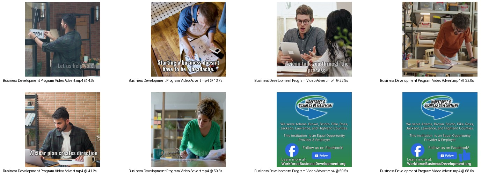

Created a short-form Facebook video advertisement for the Business Development Program, designed to be minimal, informative, and attention-grabbing for social media scrollers.

Project Goal
Quickly communicate the program’s value, hold attention long enough to deliver the core message, and end with clear contact information.
Tools: Canva, Clipchamp, Royalty-free video clips/music, AI voiceover